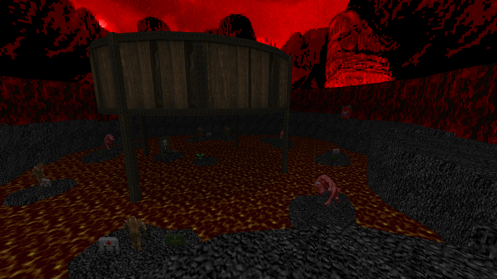

DOWNLOAD LINKS


| Year | 2021 |
| IWAD | doom.wad |
| Source port | Boom-compatible |
| Game mode(s) | Single-player |
| Map(s) contributed | E3M1 |
The 128kb mapping extravagant "challenge" was a community project for Ultimate Doom hosted by Walter Confetti. A spiritual sequel to the 64kb mapping challenge CPs, participating mappers had to make their maps within a 128kb file size limit. (Custom assets were included in the size limit.) The final megawad has 37 maps – 4 full episode replacements and an extra map in the E5M1 slot.
My map occupies the E3M1 slot, and it’s called “Cauldron”. It was made as a speedmap of sorts in about an hour. The whole map takes place in a single room, with the player pressing a switch to gain access out of the central structure and to the lava-filled outer area. There are no radsuits here, so you’ll have to stay on the rock platforms to avoid melting to death!